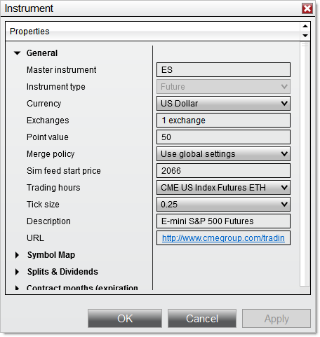
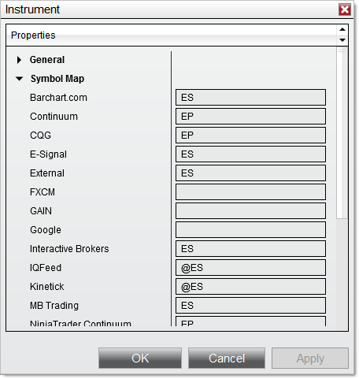
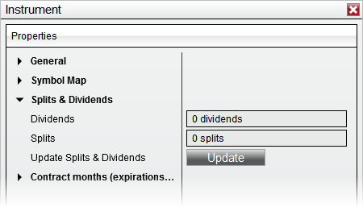
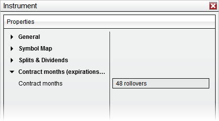
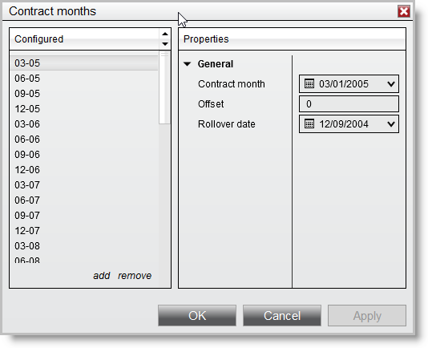
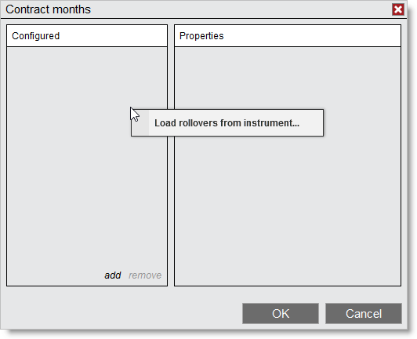

|
<< Click to Display Table of Contents >> Editing Instruments |


|
Editing Instruments
|
<< Click to Display Table of Contents >> Editing Instruments |
|
The Instrument window displays all parameters that define an instrument including symbol mappings to your connectivity provider and symbol level commission values. The editor allows you to change or add parameters to an instrument's profile. In general, instruments that are predefined in NinjaTrader do not require any parameter modification. However, you may want to override your global commission settings if a particular symbol has a unique commission structure.
In the Instruments window, once an instrument is selected in the instrument grid, you can double left mouse click or press the edit button to open the Instrument window.
General SectionThe General Section in the Instrument window displays parameters that uniquely define an instrument.

|
 Understanding the Symbol Map section
Understanding the Symbol Map section
Symbol MappingIf you add a new instrument that is not already in the NinjaTrader instrument database, you will need to map the new instrument to the symbol used for the connectivity provider (broker or data feed) that you will be requesting data from. Most instruments in the database are already mapped.
 |
 Understanding Splits & Dividends section
Understanding Splits & Dividends section
Splits & DividendsWith an equity instrument selected, the Splits & Dividends section will be available for editing. NinjaTrader will split and dividend adjust historical chart data based on the information defined per instrument and if options are enabled to do so. Some market data providers provide already adjusted data while others do not. Please see the Adding Splits and Dividends page of the help guide for more information on adding split and dividend data to an instrument.
Clicking the Update button will attempt to download Split & Dividend data directly from your provider so that manual entry is not necessary.
 |
 Understanding the Contract months section
Understanding the Contract months section
Contract MonthsThe Contract months section shows the contract months with associated rollover dates. This information is automatically downloaded from the NinjaTrader server whenever you are connected to your live data feed or the Simulated Data Feed.

You can open up the defined contract months by left mouse clicking in the Contract months field.

You can add and remove contract months by selecting the add and remove buttons in the bottom of the Configured section. You can also copy contract months that are defined in another instrument by right clicking in the Configured section then selecting Load rollovers from instrument...

Contract Month PropertiesOnce a contract is selected in the Configured section you may edit it properties. The Contract month, Offset value, and Rollover date are used when NinjaTrader automatically merges historical data.
The Offset value is used to connect the last value of a contract month with the next one.
Although NinjaTrader will attempt to download the Offset values from the data server, if they do not exist on the data server, they will be calculated locally. Offsets are only downloaded when the "Offset" field is left blank and the rollover date matches the date defined on the server.
When NinjaTrader will calculate the Offset value locally:
•The Offset field in the Contract Months window is blank •Historical data exists in the database for both the new and old contract near the rollover date •The Merge Back Adjusted policy must be selected in the Market data category of the Options menu •You must be connected to your data provider and requesting data for the instrument
How NinjaTrader will calculate the Offset value locally:
•Request the old and new expiry’s daily price data for calculations •If daily data is not offered by the data provider, use minute data •If minute data is not offered by the data provider, default Offset value will be 0 •One day prior to the rollover date, calculate the difference between the close price of the new expiry and the close price of the old expiry. This is the Offset value. •If you wish to overwrite the calculated Offset value you can input in your own •When using minute data, the close price at the ending time as defined in the default session template for the instrument will be used
|